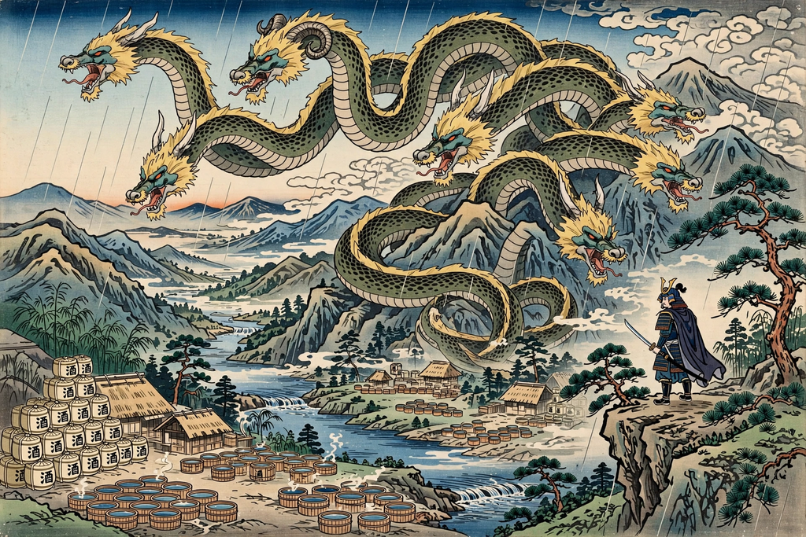

| Yamata no Orochi | |
|---|---|
| Japanese | 八岐大蛇 ("eight-branched giant snake") |
| Tradition | Japanese (Shinto) mythology |
| Region | Izumo Province, upper Hi River |
| Slain by | Susanoo-no-Mikoto |
| Notable loot | The sword Kusanagi no Tsurugi, found in its tail |

Yamata no Orochi (八岐大蛇, "eight-branched giant snake") is a legendary eight-headed and eight-tailed serpent of Japanese mythology, described in the Kojiki and Nihon Shoki. Its body was so vast it stretched over eight valleys and eight hills; its eyes were red as winter cherries, and pine and cedar grew upon its back.
Banished from Takamagahara for his offences against Amaterasu, the storm god Susanoo descended to the land of Izumo, where he found an elderly couple, the earthly deities Ashinazuchi and Tenazuchi, weeping beside their daughter Kushinadahime. The serpent had devoured seven of their eight daughters, one each year, and was coming for the last. Susanoo agreed to slay it in exchange for Kushinadahime's hand in marriage, and first transformed her into a comb which he wore in his hair.
Following Susanoo's instructions, the couple brewed sake refined eight times and set it out in eight vats behind a fence with eight openings. The serpent came, dipped each of its eight heads into a vat, drank itself into a stupor, and fell asleep. Susanoo then hacked it to pieces — breaking his blade on something hard in the middle tail, where he found the great sword Ame-no-Murakumo-no-Tsurugi, later called Kusanagi no Tsurugi. Susanoo presented the sword to Amaterasu in reconciliation; it became one of the Three Sacred Treasures of the imperial house.
The myth is often read as a nature allegory: Orochi has been interpreted as the flooding Hi River, whose eight tributaries or flood-prone reaches were subdued by embankment and irrigation. The tale also forms part of the Izumo cycle of myths, which some scholars see as encoding a historical rivalry between the Izumo region and the Yamato court. The battle is re-enacted in kagura dance-drama, and Orochi remains a staple of Japanese popular culture, appearing in video games, anime and manga.